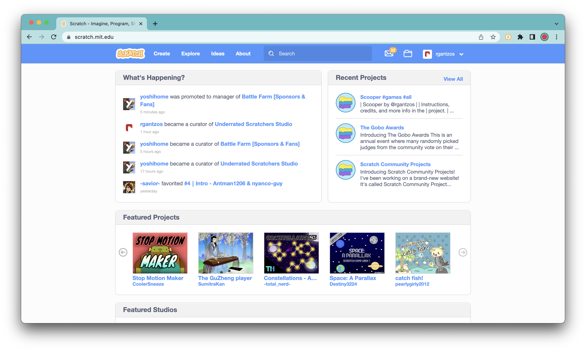

New features!
Shared Clipboard
When you copy an object from the paint editor, you can only paste it to different places within that project. Now, you can paste it between projects. You can copy a costume from one project and paste it into another one!
Important Messages
ScratchTools is introducing artificial intelligence. This brand new feature uses AI to determine which messages are important for you to read, and then highlights them at the top, above the rest of your messages.
Slash to Search
Similar to many other websites, now you can simply click the slash key to select the search bar and then begin typing.
Hide Footer
The Scratch website's footer isn't known for including many helpful links, so now you can easily hide it and remove it from the bottom of the page.
Simplify Action Buttons
Now, on project pages, you can minimize the action buttons below the Notes & Credits, and only see the icons. They take up much less space.
Themes!
You can now customize the settings page with dozens of themes!
We're very excited for themes, and we've worked hard to make sure that we can create themes for both dark and light mode users, that perfectly suit the settings page. And we're constantly adding even more! Soon, you'll be able to make your own and put them on the theme store!
Support Center
This is a change that we are very excited to announce. Now, if you need help with ScratchTools, you can use the support center. You can check through quick answers, or even open up a live chat support session with ScratchTools support specialists.
You can easily access the Support Center via the link in the bottom-left corner of the settings page, next to the "Additional settings" and "Give feedback" buttons.
Better Feedback Center
We very much appreciate when you send us feedback on features, and we read ALL of it. However, it isn't always easy to respond to the feedback. Starting now, we can respond to all feedback sent via the extension, and you'll see the messages we sent in the feedback center!
On the settings page, if you see something like 1 in the bottom-left corner, it means you have 1 or more messages! You can click on it to view your messages or send additional feedback!
Import and Export Your Settings
Your settings are like a piece of art, made by you, customized to your liking. Now, you can share it with your friends, or use it on other devices. You can simply click the "Additional settings" button in the bottom-left corner, and then either export or import settings!
Revert to Blue is Much Better
Many Scratchers still miss the blue website, so we brought it back in the last version. Now, it works even better. It's almost magical, the entire website is entirely blue again. It's seamless, better than anything else out there.
More Tutorials is Back
We've reintroduced the More Tutorials feature, and it works better than ever! We can now add even more tutorials to the page instantly, without needing to update the extension on your end. You'll see new tutorials on the Ideas page as they release on YouTube.
Coming Later in 3.0
Not everything made it out in this release, and we're still working on more!
Account Switching
Switch between your alternate accounts!
Website Dark Mode
Customize the colors of the Scratch website, just like the settings page!
Full Translations
We're finalizing all translations for multiple languages right now, and they'll be available soon!
Other Changes
Autoselect search bar on settings page
Search filters
Better onboarding
Fix duplicating clone counter
Fix TurboWarp button with unshared projects
Fix Idea Generator
Thank You
We appreciate everyone who uses ScratchTools. We turned 1 earlier this year, and it's been a long journey to get where we are today. We couldn't have done it without each and every person who has used ScratchTools, coded ScratchTools, translated ScratchTools, or given feedback to ScratchTools.
We appreciate all that you've done.